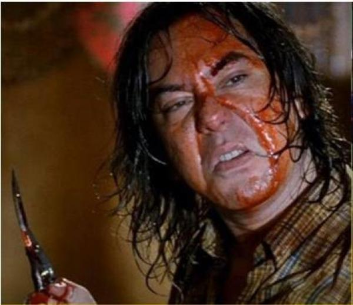
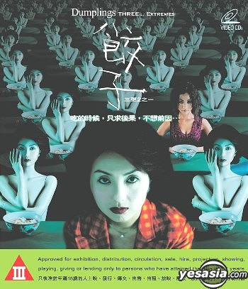

Hong Kong cinema has had an international presence since the 80s, particularly through the martial arts, wuxia and crime films, while in the 90s, arthouse films entered the equation.
However, another category that is less known in its majority also asserted its own audience, chiefly among the fans of cult and CAT III. This was the horror film, which eventually found its place in Hong Kong and international cinema with a number of masterpieces that became international sensations and in some cases, cult favorites. The comic element, the Chinese folklore (which includes hopping supernatural creatures), and the extremity in story and depiction make these films stand apart from ones with a different origin, and actually make a genre of their own.
Here are the 3 best Hong Kong films in my mind.
#1 A Chinese Ghost Story (1987)
One of the films that established Tsui Hark’s legend as a producer, “A Chinese Ghost Story” was very popular throughout Asia, and initiated a trend for folklore ghost films that combined horror with comedy in the Hong Kong film industry. Ning Tsai Shen is a tax collector who arrives in a small town to carry out his duties. Unfortunately, he ends up spending the night in the nearby Lan Ro temple. Inside the temple resides a ghost named Nie, whose duty is to enchant travelers so the tree demon she is bound to can consume their souls. Nevertheless, this time things do not go their way, as Ning manages to escape their trap through sheer luck. Furthermore, a peculiar romantic relationship seems to form between him and Nie. 
#2 Ebola Syndrome (1996)
Probably one of the most offensive entries on the list, “Ebola Syndrome” revolves around Kai San, a fugitive who ends up in Johannesburg after killing his boss and his wife. While there, he finds work in a restaurant. The actual plot initiates when his boss travels with him to an Ebola-infected village to buy pork meat. While there, Kai rapes and kills a local woman and contracts the disease.
#3 13. Dumplings (2004)
Initially part of the compilation horror production “Three… Extremes”, “Dumplings” was expanded into a feature film.
The script is based on a novel by Lillian Lee, who also penned the film, and revolves around Mrs. Li, a former popular actress who watches her looks fail along with her career. Furthermore, her marriage is also in shambles, with her husband, a successful businessman, constantly having affairs with younger women.